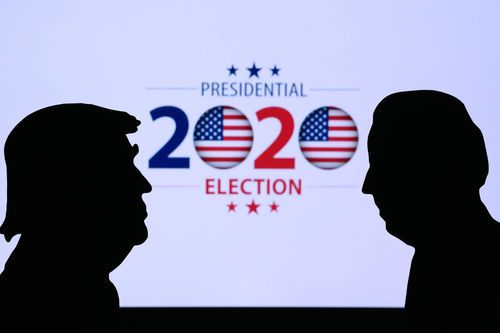

明天就是美国大选的投票日，写篇博文汇总相关的信息，并谈谈俺的看法。
今年的大选有诸多特殊之处。最近一两个月，很多读者都在问一些相关的问题，俺也借这篇博文回应一下诸多读者的提问。

如果你关注美国的大选，起码要稍微了解一下美国的选举制度，以免懵圈、犯迷糊。
上一次美国大选，俺在投票的前一刻发了篇博文《2016年美国大选的选情分析》。在其开头部分，已经扫盲了美国的“选举人制度”以及相关的术语。对这方面不太熟悉的同学，可以去看看。
除了上述这篇，俺还写过好几篇相关的博文（如下）。所以，“美国选举制度”的基本知识，今天就不重复唠叨啦。
《美国选举制度为啥这样设计？——兼谈其历史演变》
《聊聊美国政体中的权力制衡——不仅仅是三权分立》
《如何理解“英美法系”（普通法系）——从“英国古代史”聊到“香港国安法”》
“以【川普】为中心”是啥意思捏？简而言之——
投票给共和党的，有很多是铁杆的挺川普人士；而投票给民主党，很多并【不是】因为支持拜登，而是因为【反】川普。
比如说：很多历来投票给共和党的人，这次都改投拜登。甚至包括某些共和党的政客（比如前总统小布什政府内的官员），也这么干。他们当然不是为了支持拜登，而是为了阻止川普连任。
所以，本次大选的较量，并不仅仅是两大党支持者在较量，还要叠加上“挺川普”与“反川普”的较量。
纵观美国总统大选的历史，这种情况很少见。为啥会这样捏？关键在于川普本人的性格特点——
其一，他的作风本来就比较高调，并且具有煽动性
其二，他原先【不是】在华盛顿政治圈混的（被称作“政治素人”）。与政界的瓜葛较少，就比较无所顾忌。
“极化”一词在本次大选期间经常被提起。
如果你理解了上一个小节，就比较容易理解这次大选的“极化”。
请注意：川普是个精明的商人，他有清晰的竞选策略（博弈策略）。他的策略是：强化自己的基本盘，并提升自己基本盘的投票率。由于美国大选历来的“总投票率不高”（通常在 50％~60％），有投票权的人，只要 30％ 投给他，胜选就有希望。当然啦，还要考虑【摇摆州】的因素，这个待会儿再说。
（注：最近20年，美国大选的投票率分别是：2016，56％；2012，55％；2008，58％；2004，57％；2000，51％）
基于这样的策略，川普经常会发出【惊人之语】。批评他的人认为他太疯癫；但如果你理解其博弈策略，就明白他为啥要这么干——这是为了讨好他的基本盘。
川普在任4年，他的这种作风自然造就了一大批“铁杆的支持者”，但也造就了一大批“铁杆的反对者”。所谓的“极化”就是这么来滴。
很多人担心美国政坛的这种“极化”会导致政治体制的衰败。而俺的观点恰恰相反。
俺认为：
这是好现象。美国政坛长期以来都是【极化不足】。投票率不够高也是因为这个原因——很多选民觉得两党虽然有差异，但差异不够大（对自己的影响不够明显），投票的意愿当然就比较低。
而今年大选的“极化”，显著刺激了投票意愿。虽然最终统计数字还没有出来，但从“提前投票数”来看，这次的投票率很可能是近百年罕见的——越高的投票率，也就意味着【博弈越充分】。
俺经常在博文和评论区唠叨：民主体制的“投票选举”，最本质的优点在于——提供了某种低成本且全民参与的【博弈机制】，从而有利于系统更好地达成均衡。
中国历朝历代为啥都跳不出所谓的【治乱循环】？就是因为缺乏类似的博弈机制。当整个系统已经远远偏离均衡，却没有任何机制能够纠偏，最终只能是系统崩溃（并导致改朝换代）。更详细的讨论（包括“均衡与健壮性的关系”），参见如下这篇：
《“政治体制”与“系统健壮性”——基于“复杂性科学”的思考》
两大党各有一些传统的支持者（传统的基本盘）。最近几十年的大致格局如下：
（注：以下所列只是【大致】的，而不是绝对的）
顺便提醒一下：
两大党的传统基本盘并【不是】永远这样。美国建国两百多年，政党格局经历了6个时期，每个时期的政党格局都有显著不同。前一篇博文《美国政党简史（上）——从“邦联时期”到“南北战争前”》，俺已经介绍了头2个时期（第一政党体系 ＆ 第二政党体系）。关于这个《美国政党简史》，俺初步计划写“上/中/下”三篇，每篇介绍两个时期。
以往的大选，知名媒体也会站队，但不明显。
而这次大选，美国国内的知名媒体几乎都公开站队——大部分表态反川普，少数表态挺川普。
关于媒体站队，俺重点说一下《大西洋》月刊（The Atlantic）。这份杂志是比较重量级滴，也是很老牌滴（创刊于1857年）。该杂志很少对大选公开表态，在超过一个半世纪的时间里，该杂志只在【4次】美国大选中公开站队——除了本次大选，前3次分别是：1860（林肯 VS 道格拉斯），1964（约翰逊 VS 戈德华特），2016（川普 VS 希拉里）。
多数大选，华尔街给共和党的捐款更多。对于本次大选，刚开始也是如此。但在【武汉疫情】之后，华尔街捐给民主党的钱超过共和党，而且捐款总额显著超越往年（说明这【不是】随机波动）。
具体报道参见《华尔街选择放弃特朗普，转为支持拜登 @ 德国之声》
（注：以下是此文的摘录）
美国的华裔族群，传统上是支持民主党居多。但本次大选，大部分美国华裔支持共和党。
不光美国国内的华裔如此，海峡两岸也可以看到类似现象。由于天朝有真理部的严厉审查，无法进行相关统计；但台湾的民调显示——支持川普的民众显著高于拜登。BBC 的这篇报道称：
华裔的这个现象很有趣，但不影响大局（因为华裔在美国合法选民中的比例很低）。俺特意聊这点是因为——本博客的读者基本上都是华人。
那些居住在海外的华裔，其社交圈（包括“现实生活 ＆ SNS”）也是华裔居多，这种情况容易产生【回音室效应】，并导致误判。
美国的“选举人团”制度注定了——【不能】光看“普选票的多寡”，关键是【摇摆州】的胜败。而“摇摆州”里面，“关键摇摆州”是重中之重。所谓“关键摇摆州”，一方面是摇摆的幅度比较大，另一方面是选举人票数比较多。
2016大选【之前】，公众注意力集中在3个传统的“关键摇摆州”——“佛罗里达”（29票）、“宾夕法尼亚”（20票）、“俄亥俄”（18票）。
当年的很多民调认为：“威斯康辛”＆“密歇根”是民主党的“安全州”。结果这2个州被川普阵营翻盘。
基于上述情况，今年这2个州就不再被视作“安全州”。考虑到“密歇根”有16票（接近俄亥俄），它也成为“关键摇摆州”。
另外，今年的“佐治亚”＆“北卡罗来纳”的选情也很胶着，这两州分别有16票＆15票，也算是“关键摇摆州”。
所以，今年的“关键摇摆州”至少有6个，分别是【佛罗里达、宾夕法尼亚、俄亥俄、密歇根、佐治亚、北卡罗来纳】。有些媒体把“威斯康辛”和“亚利桑那”也算进去，那就有8个。
“关键摇摆州”越多，变数（不确定性）也就越大。
上一个小节介绍的那些“关键摇摆州”，其中“宾夕法尼亚、俄亥俄、密歇根”属于“铁锈地带”。这个地区曾经是美国重要的工业区。从上世纪90年代开始，制造业逐步迁出美国，这片地区开始衰败。所以被称作“锈带”（Rust Belt）。
前面说了，“工业州”通常是支持民主党。这3个州里面的“宾夕法尼亚 ＆ 密歇根”长期被视作民主党的地盘。但制造业的荒废使得“锈带”的蓝领工人越来越不满。终于使得共和党在“锈带”翻盘。
2016大选，“锈带”的3个“关键摇摆州”尽数被共和党拿下，这3州的选举人票数合计54票。对于上次大选而言，如果这3州换成是民主党夺得，希拉里就可以入主白宫了。由此可见“锈带的重要性”。
在“锈带”的三个关键摇摆州里面，【俄亥俄州】很神奇。从1944到2016，拿下“俄亥俄州”的候选人都入主白宫，只有1960年（肯尼迪 VS 尼克松）是例外。所以有个说法叫“得俄州者得天下”。
为啥俄州如此神奇捏？有一种解释说：“俄州的人口结构”与“全美的人口结构”有高度的相似性。从而使得这个州具备某种指标意义。
今年还有一个比较令人意外的是——德州（德克萨斯）开始摇摆了。在美国大选中，这个州的“选举人票”排全国第二。几十年来，票数第一的加州是民主党的“铁杆票仓”，而票数第二的德州是共和党的“铁杆票仓”。如今德州开始摇摆（虽然摇摆的幅度还不大），说明政治版图出现一些变化。
有些媒体分析说：最近这些年，有一些大型高科技企业从加州搬迁到德州，其员工也跟着迁居德州，就导致德州大城市中，民主党的支持率上升，并接近共和党。
除了德州，亚利桑那州也开始摇摆（它与德州都属于气候温暖的“阳光地带”）。这个州在过去70年中，基本都支持共和党（只有1996年是例外，支持克林顿）。但在今年，两党在亚利桑那州的支持率很接近。
前面提到的“华尔街转向”，是出现在疫情之后。如果从更广泛的角度来看，疫情也是“川普支持率”的重要转折点。
截止到2019年年底，川普的支持率还相当高。当时大多数媒体及民调都认为：川普连任，胜算很大。
等到第一波疫情爆发，川普的支持率开始暴跌；之后的“BLM 运动”（Black Lives Matter）加剧了川普支持率的下跌。
（注：有些美国华裔讨厌“BLM 运动”，并且会因此而支持川普；但非洲裔大都会支持 BLM。再加上美国的华裔社区与非洲裔社区的交集很小。再次提醒：要小心前面提及的【回音室效应】）
到了夏季，疫情有所缓和，川普的支持率也有所回升。但到了秋季，第二波疫情开始，川普的支持率（尤其是“摇摆州的支持率”）又开始下跌。
上述所说的“支持率”源于【民调】。很多川粉吐槽说“民调不靠谱”。关于“民调准确度”，后续章节会专门说。
即使民调的“绝对值”有严重偏差，但民调的【相对值】（同一个民调值相对时间的变化）还是可以当作某种参考。从“相对值的变化趋势”可以看出：疫情对川普支持率有显著影响。
每次大选都有“狗咬狗”的现象（相互爆料、撕逼、拆台）。熟悉民主体制的读者，对此应该习以为常了。
今年的特殊之处在于——“狗咬狗”对选情的影响比往年要【低】。
为啥捏？如果你理解了前面章节所说：“本次大选是以【川普】为中心展开”，自然也就明白——为啥爆料的影响降低了。
其一，
对川普的爆料，基本【不】影响其铁杆支持者。有些铁杆川粉，根本不相信川普的丑闻；还有些川粉即使相信这些丑闻，依然会投给他。
其二，
对拜登的爆料，效果也不明显。前面说了，很多投票给拜登的，根本就不喜欢拜登，他们是为了阻止川普连任才投给拜登。
川普上台之后，有很多人（包括美国之外的人）成为“川粉”；同样的，也有很多人成为“川黑”。
这两类人看似相反，其实有很多共性——前者通常有“【光环效应】的认知谬误”，后者通常有“【逆向光环效应】的认知谬误”。相关讨论可以看俺十多年前（2009）的博文《光环效应引发的认知误区》。
另一个需要提醒大伙儿的是：不要把任何人当作自己的偶像。一旦你把某人当作自己的偶像，你就已经开始丧失【思想的独立性】，这是非常致命滴！这方面的相关讨论参见《不要成为“粉丝”——谈谈“偶像崇拜”的成因和危害》
在“代议制民主”的环境里，“政府＆政客”都只是公民的【佣人和工具】。试想一下：你会去崇拜你的佣人吗？
对于“政府＆政客”，你不但不能崇拜他们，而且要对他们时刻保持警惕性。因为他们手中握有【公权力】，你要像防贼一样防着他们。
不管是支持某个党派 or 反对某个党派，你首先要关注的是该党派的【政治理念】，以及这些政治理念背后所代表的【价值观】。
很多人只关注政客，而完全不去思考政治理念，那就是本末倒置。
在聊“今年的民调”之前，有必要先扫盲一下基础知识，并介绍一下去年的民调。
美国大选的民调，至少包括两大类——“公开民调 VS 内部民调”。
大伙儿平时从媒体上看到的，就是“公开民调”。“内部民调”也称作“不公开民调”，它是用来【卖钱】滴。比如说：两大党的竞选团队，需要了解各州的选情，才能决定在各州投放多少资源（包括：竞选广告、造势大会）
另外，有些与“选举结果”关系密切的利益相关方，也会花钱购买民调。比如说：不同的政党上台，如果会显著影响某个大公司的利益，该公司也会花钱购买这种“内部民调”，以评估自身的经济风险。
一般来说，“内部民调”比“公开民调”更准（毕竟这是拿来卖钱的嘛）。但由于“内部民调”本身是不公开滴，如何了解“内部民调”的情况捏？
有一个间接的办法，就是【观察竞选团队的行为】（待会儿会聊到这点）
在聊上次大选的民调之前，先稍微自吹一下：
在2016年投票日的【前一刻】，俺发了篇《2016年美国大选的选情分析》，文中俺就多次提醒读者：民调可能会不准（有隐性的川普支持者）。
2016大选的民调，后来被严重吐槽。但也产生了一些误解，俺简单澄清几点：
1. 针对【普选票】的民调，基本算是准确（希拉里的普选票确实超过川普）。
2. 主要的民调偏差出在【摇摆州】，尤其是铁锈地带周边（密歇根 ＆ 威斯康辛）。
3. 某些“内部民调”也出错了。如果观察民主党竞选团队的资源投放，对上述两个州的投放力度偏低。这可以间接说明，他们购买的“内部民调”对上述2个州有严重偏差。
4. 并【不是】所有民调都出错。有少数民调成功预测了川普在2016获胜。
截止到昨天（11月1日），大部分民调显示——拜登有极大概率入主白宫；只有极个别民调认为川普有微弱优势连任。
所以，现在的问题在于——2020的民调是否会重蹈覆辙？
以下是俺的点评（个人观点，仅供参考）：
有两类【相互对冲】的因素在起作用，一类因素导致今年的民调比2016更准确，另一类因素导致更不准确。俺分别说明。
导致民调更准确的因素
1. 在2016年误判之后，相关的民调机构肯定会想办法修正统计方式及调查问卷，使之更准确。
2. 2016年误导民调的一大因素是“害羞的川普支持者”。当时川普刚从政，很多人虽然支持他，但不敢让别人知道。如今川普已经干了4年，这类人所占的比重会下降很多。
导致民调更【不】准确的因素
1. 疫情导致投票方式的变化——很多人提前投票，而且提前投票的比例很高。这种情况过去从未出现过，可能会加剧民调机构的误判。
2. （前面章节说过）今年的投票率显著上升，可能是百年来罕见。这种情况过去从未出现过，可能会加剧民调机构的误判。
有必要提醒大伙儿（尤其是思路不严密的读者）：“导致民调【不】准确的因素”，既可能导致低估，也可能导致高估。
由于很多人不太敢相信民调，俺再来聊聊【非】民调的预测方式，供大伙儿参考。
对以下每一种预测方法，都会附上俺个人的点评。
几十年来，每次大选都有针对选举结果的赌博（下注）。由于博彩需要拿出【真金白银】，而民调的问卷只是“空口说白话”（没啥成本）。很多人都认为：“博彩的赔率”会比“民调”更准。
最近几天（10月底/11月初），全球各大博彩平台公布的赔率显示——（在任何一个博彩平台）押注拜登获胜的大大超过川普。
俺的点评：
这种预测方式的最大问题在于：样本基数的偏差。博彩赔率只能反应出那些参与下注的人有啥偏好。首先，这些人【未必】是美国公民；其次，即便是美国公民，参与博彩的比例，也只占“整体选民”的很小比例。
另外，由于博彩赔率在2016年出错（当年也是押注川普的更少）。所以，那些不相信民调的人，估计也不会相信博彩赔率所作出的预测。
先说说“义乌指数”的由来。
每次大选年，美国两大党都需要进行各种造势大会。自然需要用到一些外围的小商品（比如：帽子、旗帜、标语、马克杯、等等）。而且这些小商品都印有相关党派或候选人的 logo。
一般来说，这些小商品都是从咱们天朝浙江省义乌采购滴。于是捏，只要统计义乌销售的美国竞选用具，看看哪个党派的购买量更大，通常就反映出该党派的胜率更高。
俺的点评：
首先，这种方式比“博彩赔率”【更准】。因为相关的购买量反应的是美国本土选民的倾向（别国的人，不太会去购买这些东西）。
其次，这种方式也比“调查问卷”更准（因为问卷的样本，覆盖率很有限）；而“竞选用具的购买量”，覆盖面就很大了。
“义乌指数”准确地预测了2016大选的结果。今年的“义乌指数”依然看好川普。
但俺要提醒川粉：先别急着兴奋，听俺继续分析。
今年的“义乌指数”可能会严重失灵，根源在于【疫情】。
由于疫情严重，而且两党应对疫情的措施完全不同——共和党依旧召开【大型】造势大会；而民主党只搞【小型】集会，很多选举活动改为网上进行。所以，今年的“义乌指数”反映出：共和党的购买量远远高于民主党（而且高得离谱）。这充分说明——“义乌指数”已经严重偏离了实际情况。
考虑到某些读者的逻辑能力太弱，有必要补充一下：
当俺说“义乌指数失灵”，并【不等于】说“川普就会落选”。这两个命题在逻辑上完全不等价。
为了写今天这篇，俺特地去看了不同阵营的网站、SNS、论坛。很多川粉充满信心地认为：川普能连任，而且是大胜。
他们给出的理由是：共和党的造势大会，人潮涌动；而民主党的造势大会，稀稀拉拉。
俺的点评：
以这个理由进行预测，俺认为缺乏说服力——
其一，因为疫情的关系，两党的造势大会显著不同（参见上一个小节的分析）
其二，参加拜登造势大会的，通常是他的支持者；那些“反川普”且“不喜欢拜登”的选民不会去参加。但这类选民还是会投拜登的票。
所谓的【标普】是“标准普尔500指数”的简称。这是美国股市一个非常重要的风向标（大致类似于天朝的“上证指数”）。
这个预测招数出自美国智库“Strategy Research Partners”，其公式是：如果在投票日的前90天（自然日），标普上涨，则执政党获胜；反之，执政党败落。
这个预测方式的准确率很高——1972以来，只在1980年失灵，其它每次都应验（包括2016）。
本次大选的前90天是8月4日，当时“标普”的点数为【3306.51】。明天就是大选日，今天（11月2日）的标普指数是【3269.96】（大伙儿可以去标普的官网瞧一瞧）
经热心读者提醒，加个【更正说明】：
本文发布于【北京时区】11月2日晚间。因为时差的关系，美国那边还没有到11月2日的收盘时间。所以上述点位还【不是】最终数值。
在本文发布的次日（北京时间11月3日上午），俺又去查了标普官网，11月2日收盘的点位是【3310.24】，正好略微超过90天前。
以上是俺的疏忽，向列位看官表示抱歉 :( 但这个失误【不】影响下面这段点评。
俺的点评：
这个指数的准确率很高，至少说明“投票前的经济走势”对政党轮替有显著影响。
但这个预测方式的缺陷在于——【单一归因谬误】。影响大选结果的因素有很多，“经济”只是其中之一。
另外，今年的疫情是最近百年来罕见的黑天鹅事件，导致今年的投票率超高，很多是【提前投票】（对那些提前投票的人，标普的统计时段要【前移】）；再加上执政的总统兼候选人川普是【体制外】人士，行事风格又比较另类。
所以，“标普的预测”，失灵的可能性会比往年更高。
美国有个历史教授艾伦·李奇曼（Allan Lichtman），他从1984年开始预测美国大选，将近40年，每次都正确（包括2016）。
2016年的时候，他在投票日的【前2个月】就预测川普会赢。当时很多人都说他“错得离谱”；但事实证明他是“正确的少数派”。
他不是基于民调，而是评估【执政党的治理效果】——如果治理效果不好，就会出现政党轮替；否则就是原有的党继续执政。
为了评估【治理效果】，他给出13个问题，分别是：
如果这13个问题有7个（或更多）是否定的回答，那么就出现政党轮替；反之，原有的党派继续执政。
根据李奇曼自己的说法，截止2019年年底，只有4个问题是否定的回答（在那种情况下，川普连任的概率极高）。
但到了现在，由于出现全球疫情，再加上“弗洛伊德事件”引发的大规模骚乱，已经有7个问题是否定的回答。所以他认为今年大选，川普连任会失败。
俺的点评：
神奇教授的方法，避免了“标普预测”的“单一归因谬误”。从这点而言，他比标普更有参考价值。
他的模型当然也有缺陷，俺认为主要缺陷在于——13个问题中很多【难以量化】（比如：“魅力”难以量化；比如：何种丑闻才能算“重大”）。
对这些难以量化的因素，在评估时必然会引入一定程度的【主观判断】，而这就可能导致该模型失灵。
虽然他的模型有缺陷，但在本文介绍的所有预测方式中，他这个模型大概是最好的一个了。
前面喷了这么多口水，在结尾稍微总结一下。
之前有读者问俺对本次大选的看法。当时俺的回应是：除了投票率会很高（这点俺比较肯定）；其它的，都不太确定。
如果要更进一步解释，大致如下：
最终的结果，会分布在一个比较宽的范围内，从“共和党小胜”到“民主党大胜”皆有可能——
所谓“共和党小胜”指的是：共和党赢得总统宝座，且国会维持现状（共和党控制参议院，民主党控制众议院）。
所谓“民主党小胜”指的是：民主党赢得总统宝座，且国会维持现状（共和党控制参议院，民主党控制众议院）。
所谓“民主党大胜”指的是：民主党不但拿下总统，还拿下参议院（民主党同时控制总统＆国会两院）。这种情况被称作“蓝色浪潮”（蓝色是民主党的代表色）。
假设出现“蓝色浪潮”，就说明民主党优势很明显。这种情况在选举日当晚（明天晚上）就能看出来。
反之，如果只是其中一个党小胜，说明两边差不多。由于今年有很多邮寄选票，会拖慢计票周期，可能要等到好几天之后，才会知道全部的结果（包括每个州的国会议员选举结果）。
大伙儿拭目以待吧。
俺博客上，和本文相关的帖子（需翻墙）：
《2016年美国大选的选情分析》
《美国选举制度为啥这样设计？——兼谈其历史演变》
《聊聊美国政体中的权力制衡——不仅仅是三权分立》
《美国政党简史（上）——从“邦联时期”到“南北战争前”》
《如何理解“英美法系”（普通法系）——从“英国古代史”聊到“香港国安法”》
《“政治体制”与“系统健壮性”——基于“复杂性科学”的思考》
今年的大选有诸多特殊之处。最近一两个月，很多读者都在问一些相关的问题，俺也借这篇博文回应一下诸多读者的提问。
★预备知识
如果你关注美国的大选，起码要稍微了解一下美国的选举制度，以免懵圈、犯迷糊。
上一次美国大选，俺在投票的前一刻发了篇博文《2016年美国大选的选情分析》。在其开头部分，已经扫盲了美国的“选举人制度”以及相关的术语。对这方面不太熟悉的同学，可以去看看。
除了上述这篇，俺还写过好几篇相关的博文（如下）。所以，“美国选举制度”的基本知识，今天就不重复唠叨啦。
《美国选举制度为啥这样设计？——兼谈其历史演变》
《聊聊美国政体中的权力制衡——不仅仅是三权分立》
《如何理解“英美法系”（普通法系）——从“英国古代史”聊到“香港国安法”》
★今年大选的特点
◇以【川普】为中心展开
“以【川普】为中心”是啥意思捏？简而言之——
投票给共和党的，有很多是铁杆的挺川普人士；而投票给民主党，很多并【不是】因为支持拜登，而是因为【反】川普。
比如说：很多历来投票给共和党的人，这次都改投拜登。甚至包括某些共和党的政客（比如前总统小布什政府内的官员），也这么干。他们当然不是为了支持拜登，而是为了阻止川普连任。
所以，本次大选的较量，并不仅仅是两大党支持者在较量，还要叠加上“挺川普”与“反川普”的较量。
纵观美国总统大选的历史，这种情况很少见。为啥会这样捏？关键在于川普本人的性格特点——
其一，他的作风本来就比较高调，并且具有煽动性
其二，他原先【不是】在华盛顿政治圈混的（被称作“政治素人”）。与政界的瓜葛较少，就比较无所顾忌。
◇极化现象
“极化”一词在本次大选期间经常被提起。
如果你理解了上一个小节，就比较容易理解这次大选的“极化”。
请注意：川普是个精明的商人，他有清晰的竞选策略（博弈策略）。他的策略是：强化自己的基本盘，并提升自己基本盘的投票率。由于美国大选历来的“总投票率不高”（通常在 50％~60％），有投票权的人，只要 30％ 投给他，胜选就有希望。当然啦，还要考虑【摇摆州】的因素，这个待会儿再说。
（注：最近20年，美国大选的投票率分别是：2016，56％；2012，55％；2008，58％；2004，57％；2000，51％）
基于这样的策略，川普经常会发出【惊人之语】。批评他的人认为他太疯癫；但如果你理解其博弈策略，就明白他为啥要这么干——这是为了讨好他的基本盘。
川普在任4年，他的这种作风自然造就了一大批“铁杆的支持者”，但也造就了一大批“铁杆的反对者”。所谓的“极化”就是这么来滴。
◇“极化现象”的优劣分析
很多人担心美国政坛的这种“极化”会导致政治体制的衰败。而俺的观点恰恰相反。
俺认为：
这是好现象。美国政坛长期以来都是【极化不足】。投票率不够高也是因为这个原因——很多选民觉得两党虽然有差异，但差异不够大（对自己的影响不够明显），投票的意愿当然就比较低。
而今年大选的“极化”，显著刺激了投票意愿。虽然最终统计数字还没有出来，但从“提前投票数”来看，这次的投票率很可能是近百年罕见的——越高的投票率，也就意味着【博弈越充分】。
俺经常在博文和评论区唠叨：民主体制的“投票选举”，最本质的优点在于——提供了某种低成本且全民参与的【博弈机制】，从而有利于系统更好地达成均衡。
中国历朝历代为啥都跳不出所谓的【治乱循环】？就是因为缺乏类似的博弈机制。当整个系统已经远远偏离均衡，却没有任何机制能够纠偏，最终只能是系统崩溃（并导致改朝换代）。更详细的讨论（包括“均衡与健壮性的关系”），参见如下这篇：
《“政治体制”与“系统健壮性”——基于“复杂性科学”的思考》
★两党的支持者
◇传统的支持者
两大党各有一些传统的支持者（传统的基本盘）。最近几十年的大致格局如下：
（注：以下所列只是【大致】的，而不是绝对的）
工业州（民主党） VS 农业州（共和党）（这个清单还可以列很长，俺比较懒，只随便写几条）
小政府倾向（共和党） VS 大政府倾向（民主党）
支持堕胎（民主党） VS 反对堕胎（共和党）
支持同性恋（民主党） VS 抵制同性恋（共和党）
强化持枪自由（共和党） VS 限制持枪自由（民主党）
宗教意识淡薄（民主党） VS 宗教信仰虔诚（共和党）
......
顺便提醒一下：
两大党的传统基本盘并【不是】永远这样。美国建国两百多年，政党格局经历了6个时期，每个时期的政党格局都有显著不同。前一篇博文《美国政党简史（上）——从“邦联时期”到“南北战争前”》，俺已经介绍了头2个时期（第一政党体系 ＆ 第二政党体系）。关于这个《美国政党简史》，俺初步计划写“上/中/下”三篇，每篇介绍两个时期。
◇知名媒体的站队
以往的大选，知名媒体也会站队，但不明显。
而这次大选，美国国内的知名媒体几乎都公开站队——大部分表态反川普，少数表态挺川普。
关于媒体站队，俺重点说一下《大西洋》月刊（The Atlantic）。这份杂志是比较重量级滴，也是很老牌滴（创刊于1857年）。该杂志很少对大选公开表态，在超过一个半世纪的时间里，该杂志只在【4次】美国大选中公开站队——除了本次大选，前3次分别是：1860（林肯 VS 道格拉斯），1964（约翰逊 VS 戈德华特），2016（川普 VS 希拉里）。
◇华尔街的转向
多数大选，华尔街给共和党的捐款更多。对于本次大选，刚开始也是如此。但在【武汉疫情】之后，华尔街捐给民主党的钱超过共和党，而且捐款总额显著超越往年（说明这【不是】随机波动）。
具体报道参见《华尔街选择放弃特朗普，转为支持拜登 @ 德国之声》
（注：以下是此文的摘录）
金融精英的竞选活动捐款很少达到今年这么多。十年来首次，银行、投资公司对民主党的投资比对共和党的投资更多。值得注意，因为在所有市场中，金融部门是最大的政治运动资助者。
根据无党派组织（CRP）的数据，自今年年初以来，这些金融公司已向民主党捐赠了2.65亿美元，比共和党多了近1亿美元。CRP 总监萨拉·布莱纳（Sarah Bryner）表示：“对共和党来说，金融企业通常被认为是可靠的资金来源。但是在这个周期中，趋势已经逆转了。”
◇华裔族群的转向
美国的华裔族群，传统上是支持民主党居多。但本次大选，大部分美国华裔支持共和党。
不光美国国内的华裔如此，海峡两岸也可以看到类似现象。由于天朝有真理部的严厉审查，无法进行相关统计；但台湾的民调显示——支持川普的民众显著高于拜登。BBC 的这篇报道称：
知名的跨国民调机构 YouGov，10月份发布了2020年10月份两次在欧洲七国与亚太八国和地区调查结果。资料显示，在台湾有 42% 的民众支特朗普，30% 挺民主党对手拜登（Joe Biden）; 台湾是这两波调查对象中，特朗普的支持度唯一超过拜登，并且拥有最多“川粉”（特朗普支持者）的地方，台湾之后是香港。
华裔的这个现象很有趣，但不影响大局（因为华裔在美国合法选民中的比例很低）。俺特意聊这点是因为——本博客的读者基本上都是华人。
那些居住在海外的华裔，其社交圈（包括“现实生活 ＆ SNS”）也是华裔居多，这种情况容易产生【回音室效应】，并导致误判。
★今年大选的【摇摆州】＆【关键摇摆州】
美国的“选举人团”制度注定了——【不能】光看“普选票的多寡”，关键是【摇摆州】的胜败。而“摇摆州”里面，“关键摇摆州”是重中之重。所谓“关键摇摆州”，一方面是摇摆的幅度比较大，另一方面是选举人票数比较多。
◇2016的选情
2016大选【之前】，公众注意力集中在3个传统的“关键摇摆州”——“佛罗里达”（29票）、“宾夕法尼亚”（20票）、“俄亥俄”（18票）。
当年的很多民调认为：“威斯康辛”＆“密歇根”是民主党的“安全州”。结果这2个州被川普阵营翻盘。
◇2020的选情
基于上述情况，今年这2个州就不再被视作“安全州”。考虑到“密歇根”有16票（接近俄亥俄），它也成为“关键摇摆州”。
另外，今年的“佐治亚”＆“北卡罗来纳”的选情也很胶着，这两州分别有16票＆15票，也算是“关键摇摆州”。
所以，今年的“关键摇摆州”至少有6个，分别是【佛罗里达、宾夕法尼亚、俄亥俄、密歇根、佐治亚、北卡罗来纳】。有些媒体把“威斯康辛”和“亚利桑那”也算进去，那就有8个。
“关键摇摆州”越多，变数（不确定性）也就越大。
◇【铁锈地带】的重要性
上一个小节介绍的那些“关键摇摆州”，其中“宾夕法尼亚、俄亥俄、密歇根”属于“铁锈地带”。这个地区曾经是美国重要的工业区。从上世纪90年代开始，制造业逐步迁出美国，这片地区开始衰败。所以被称作“锈带”（Rust Belt）。
前面说了，“工业州”通常是支持民主党。这3个州里面的“宾夕法尼亚 ＆ 密歇根”长期被视作民主党的地盘。但制造业的荒废使得“锈带”的蓝领工人越来越不满。终于使得共和党在“锈带”翻盘。
2016大选，“锈带”的3个“关键摇摆州”尽数被共和党拿下，这3州的选举人票数合计54票。对于上次大选而言，如果这3州换成是民主党夺得，希拉里就可以入主白宫了。由此可见“锈带的重要性”。
◇【俄亥俄州】的指标意义
在“锈带”的三个关键摇摆州里面，【俄亥俄州】很神奇。从1944到2016，拿下“俄亥俄州”的候选人都入主白宫，只有1960年（肯尼迪 VS 尼克松）是例外。所以有个说法叫“得俄州者得天下”。
为啥俄州如此神奇捏？有一种解释说：“俄州的人口结构”与“全美的人口结构”有高度的相似性。从而使得这个州具备某种指标意义。
◇【阳光地带】的变化
今年还有一个比较令人意外的是——德州（德克萨斯）开始摇摆了。在美国大选中，这个州的“选举人票”排全国第二。几十年来，票数第一的加州是民主党的“铁杆票仓”，而票数第二的德州是共和党的“铁杆票仓”。如今德州开始摇摆（虽然摇摆的幅度还不大），说明政治版图出现一些变化。
有些媒体分析说：最近这些年，有一些大型高科技企业从加州搬迁到德州，其员工也跟着迁居德州，就导致德州大城市中，民主党的支持率上升，并接近共和党。
除了德州，亚利桑那州也开始摇摆（它与德州都属于气候温暖的“阳光地带”）。这个州在过去70年中，基本都支持共和党（只有1996年是例外，支持克林顿）。但在今年，两党在亚利桑那州的支持率很接近。
★今年大选的【疫情因素】
前面提到的“华尔街转向”，是出现在疫情之后。如果从更广泛的角度来看，疫情也是“川普支持率”的重要转折点。
截止到2019年年底，川普的支持率还相当高。当时大多数媒体及民调都认为：川普连任，胜算很大。
等到第一波疫情爆发，川普的支持率开始暴跌；之后的“BLM 运动”（Black Lives Matter）加剧了川普支持率的下跌。
（注：有些美国华裔讨厌“BLM 运动”，并且会因此而支持川普；但非洲裔大都会支持 BLM。再加上美国的华裔社区与非洲裔社区的交集很小。再次提醒：要小心前面提及的【回音室效应】）
到了夏季，疫情有所缓和，川普的支持率也有所回升。但到了秋季，第二波疫情开始，川普的支持率（尤其是“摇摆州的支持率”）又开始下跌。
上述所说的“支持率”源于【民调】。很多川粉吐槽说“民调不靠谱”。关于“民调准确度”，后续章节会专门说。
即使民调的“绝对值”有严重偏差，但民调的【相对值】（同一个民调值相对时间的变化）还是可以当作某种参考。从“相对值的变化趋势”可以看出：疫情对川普支持率有显著影响。
★今年大选的【狗咬狗】
◇今年爆料的效果降低
每次大选都有“狗咬狗”的现象（相互爆料、撕逼、拆台）。熟悉民主体制的读者，对此应该习以为常了。
今年的特殊之处在于——“狗咬狗”对选情的影响比往年要【低】。
为啥捏？如果你理解了前面章节所说：“本次大选是以【川普】为中心展开”，自然也就明白——为啥爆料的影响降低了。
其一，
对川普的爆料，基本【不】影响其铁杆支持者。有些铁杆川粉，根本不相信川普的丑闻；还有些川粉即使相信这些丑闻，依然会投给他。
其二，
对拜登的爆料，效果也不明显。前面说了，很多投票给拜登的，根本就不喜欢拜登，他们是为了阻止川普连任才投给拜登。
◇如何看待政治人物（政客）
川普上台之后，有很多人（包括美国之外的人）成为“川粉”；同样的，也有很多人成为“川黑”。
这两类人看似相反，其实有很多共性——前者通常有“【光环效应】的认知谬误”，后者通常有“【逆向光环效应】的认知谬误”。相关讨论可以看俺十多年前（2009）的博文《光环效应引发的认知误区》。
另一个需要提醒大伙儿的是：不要把任何人当作自己的偶像。一旦你把某人当作自己的偶像，你就已经开始丧失【思想的独立性】，这是非常致命滴！这方面的相关讨论参见《不要成为“粉丝”——谈谈“偶像崇拜”的成因和危害》
在“代议制民主”的环境里，“政府＆政客”都只是公民的【佣人和工具】。试想一下：你会去崇拜你的佣人吗？
对于“政府＆政客”，你不但不能崇拜他们，而且要对他们时刻保持警惕性。因为他们手中握有【公权力】，你要像防贼一样防着他们。
◇如何看待党派
不管是支持某个党派 or 反对某个党派，你首先要关注的是该党派的【政治理念】，以及这些政治理念背后所代表的【价值观】。
很多人只关注政客，而完全不去思考政治理念，那就是本末倒置。
★基于【民调】的预测
在聊“今年的民调”之前，有必要先扫盲一下基础知识，并介绍一下去年的民调。
◇民调的两种类型——公开民调 VS 内部民调
美国大选的民调，至少包括两大类——“公开民调 VS 内部民调”。
大伙儿平时从媒体上看到的，就是“公开民调”。“内部民调”也称作“不公开民调”，它是用来【卖钱】滴。比如说：两大党的竞选团队，需要了解各州的选情，才能决定在各州投放多少资源（包括：竞选广告、造势大会）
另外，有些与“选举结果”关系密切的利益相关方，也会花钱购买民调。比如说：不同的政党上台，如果会显著影响某个大公司的利益，该公司也会花钱购买这种“内部民调”，以评估自身的经济风险。
一般来说，“内部民调”比“公开民调”更准（毕竟这是拿来卖钱的嘛）。但由于“内部民调”本身是不公开滴，如何了解“内部民调”的情况捏？
有一个间接的办法，就是【观察竞选团队的行为】（待会儿会聊到这点）
◇2016大选的民调
在聊上次大选的民调之前，先稍微自吹一下：
在2016年投票日的【前一刻】，俺发了篇《2016年美国大选的选情分析》，文中俺就多次提醒读者：民调可能会不准（有隐性的川普支持者）。
2016大选的民调，后来被严重吐槽。但也产生了一些误解，俺简单澄清几点：
1. 针对【普选票】的民调，基本算是准确（希拉里的普选票确实超过川普）。
2. 主要的民调偏差出在【摇摆州】，尤其是铁锈地带周边（密歇根 ＆ 威斯康辛）。
3. 某些“内部民调”也出错了。如果观察民主党竞选团队的资源投放，对上述两个州的投放力度偏低。这可以间接说明，他们购买的“内部民调”对上述2个州有严重偏差。
4. 并【不是】所有民调都出错。有少数民调成功预测了川普在2016获胜。
◇2020大选的民调
截止到昨天（11月1日），大部分民调显示——拜登有极大概率入主白宫；只有极个别民调认为川普有微弱优势连任。
所以，现在的问题在于——2020的民调是否会重蹈覆辙？
以下是俺的点评（个人观点，仅供参考）：
有两类【相互对冲】的因素在起作用，一类因素导致今年的民调比2016更准确，另一类因素导致更不准确。俺分别说明。
导致民调更准确的因素
1. 在2016年误判之后，相关的民调机构肯定会想办法修正统计方式及调查问卷，使之更准确。
2. 2016年误导民调的一大因素是“害羞的川普支持者”。当时川普刚从政，很多人虽然支持他，但不敢让别人知道。如今川普已经干了4年，这类人所占的比重会下降很多。
导致民调更【不】准确的因素
1. 疫情导致投票方式的变化——很多人提前投票，而且提前投票的比例很高。这种情况过去从未出现过，可能会加剧民调机构的误判。
2. （前面章节说过）今年的投票率显著上升，可能是百年来罕见。这种情况过去从未出现过，可能会加剧民调机构的误判。
有必要提醒大伙儿（尤其是思路不严密的读者）：“导致民调【不】准确的因素”，既可能导致低估，也可能导致高估。
★基于【非民调】的预测
由于很多人不太敢相信民调，俺再来聊聊【非】民调的预测方式，供大伙儿参考。
对以下每一种预测方法，都会附上俺个人的点评。
◇基于【博彩赔率】的预测方法
几十年来，每次大选都有针对选举结果的赌博（下注）。由于博彩需要拿出【真金白银】，而民调的问卷只是“空口说白话”（没啥成本）。很多人都认为：“博彩的赔率”会比“民调”更准。
最近几天（10月底/11月初），全球各大博彩平台公布的赔率显示——（在任何一个博彩平台）押注拜登获胜的大大超过川普。
俺的点评：
这种预测方式的最大问题在于：样本基数的偏差。博彩赔率只能反应出那些参与下注的人有啥偏好。首先，这些人【未必】是美国公民；其次，即便是美国公民，参与博彩的比例，也只占“整体选民”的很小比例。
另外，由于博彩赔率在2016年出错（当年也是押注川普的更少）。所以，那些不相信民调的人，估计也不会相信博彩赔率所作出的预测。
◇基于【义乌指数】的预测方法
先说说“义乌指数”的由来。
每次大选年，美国两大党都需要进行各种造势大会。自然需要用到一些外围的小商品（比如：帽子、旗帜、标语、马克杯、等等）。而且这些小商品都印有相关党派或候选人的 logo。
一般来说，这些小商品都是从咱们天朝浙江省义乌采购滴。于是捏，只要统计义乌销售的美国竞选用具，看看哪个党派的购买量更大，通常就反映出该党派的胜率更高。
俺的点评：
首先，这种方式比“博彩赔率”【更准】。因为相关的购买量反应的是美国本土选民的倾向（别国的人，不太会去购买这些东西）。
其次，这种方式也比“调查问卷”更准（因为问卷的样本，覆盖率很有限）；而“竞选用具的购买量”，覆盖面就很大了。
“义乌指数”准确地预测了2016大选的结果。今年的“义乌指数”依然看好川普。
但俺要提醒川粉：先别急着兴奋，听俺继续分析。
今年的“义乌指数”可能会严重失灵，根源在于【疫情】。
由于疫情严重，而且两党应对疫情的措施完全不同——共和党依旧召开【大型】造势大会；而民主党只搞【小型】集会，很多选举活动改为网上进行。所以，今年的“义乌指数”反映出：共和党的购买量远远高于民主党（而且高得离谱）。这充分说明——“义乌指数”已经严重偏离了实际情况。
考虑到某些读者的逻辑能力太弱，有必要补充一下：
当俺说“义乌指数失灵”，并【不等于】说“川普就会落选”。这两个命题在逻辑上完全不等价。
◇基于【造势大会】的预测方法
为了写今天这篇，俺特地去看了不同阵营的网站、SNS、论坛。很多川粉充满信心地认为：川普能连任，而且是大胜。
他们给出的理由是：共和党的造势大会，人潮涌动；而民主党的造势大会，稀稀拉拉。
俺的点评：
以这个理由进行预测，俺认为缺乏说服力——
其一，因为疫情的关系，两党的造势大会显著不同（参见上一个小节的分析）
其二，参加拜登造势大会的，通常是他的支持者；那些“反川普”且“不喜欢拜登”的选民不会去参加。但这类选民还是会投拜登的票。
◇基于【标普】的预测方法
所谓的【标普】是“标准普尔500指数”的简称。这是美国股市一个非常重要的风向标（大致类似于天朝的“上证指数”）。
这个预测招数出自美国智库“Strategy Research Partners”，其公式是：如果在投票日的前90天（自然日），标普上涨，则执政党获胜；反之，执政党败落。
这个预测方式的准确率很高——1972以来，只在1980年失灵，其它每次都应验（包括2016）。
本次大选的前90天是8月4日，当时“标普”的点数为【3306.51】。明天就是大选日，今天（11月2日）的标普指数是【3269.96】（大伙儿可以去标普的官网瞧一瞧）
经热心读者提醒，加个【更正说明】：
本文发布于【北京时区】11月2日晚间。因为时差的关系，美国那边还没有到11月2日的收盘时间。所以上述点位还【不是】最终数值。
在本文发布的次日（北京时间11月3日上午），俺又去查了标普官网，11月2日收盘的点位是【3310.24】，正好略微超过90天前。
以上是俺的疏忽，向列位看官表示抱歉 :( 但这个失误【不】影响下面这段点评。
俺的点评：
这个指数的准确率很高，至少说明“投票前的经济走势”对政党轮替有显著影响。
但这个预测方式的缺陷在于——【单一归因谬误】。影响大选结果的因素有很多，“经济”只是其中之一。
另外，今年的疫情是最近百年来罕见的黑天鹅事件，导致今年的投票率超高，很多是【提前投票】（对那些提前投票的人，标普的统计时段要【前移】）；再加上执政的总统兼候选人川普是【体制外】人士，行事风格又比较另类。
所以，“标普的预测”，失灵的可能性会比往年更高。
◇【神奇教授】的预测方法
美国有个历史教授艾伦·李奇曼（Allan Lichtman），他从1984年开始预测美国大选，将近40年，每次都正确（包括2016）。
2016年的时候，他在投票日的【前2个月】就预测川普会赢。当时很多人都说他“错得离谱”；但事实证明他是“正确的少数派”。
他不是基于民调，而是评估【执政党的治理效果】——如果治理效果不好，就会出现政党轮替；否则就是原有的党继续执政。
为了评估【治理效果】，他给出13个问题，分别是：
1. 政党授权因素——中期选举之后，执政党在美国众议院席位增加了。
2. 初选因素——执政党总统提名人之间没有出现强烈竞争。
3. 连任因素——执政党的候选人是现任总统。
4. 第三党因素——没有重要的第三党派或独立竞选人。
5. 短期经济因素——竞选期间经济并未衰退。
6. 长期经济因素——任期内实际人均经济增长等于或超过前两个总统任期的平均增长。
7. 政策因素——现任总统对国家政策产生重大影响。
8. 社会动荡因素——在任期内没有持续的社会动荡。
9. 丑闻因素——现任政府无重大丑闻。
10. 外交＆军事失败——现任政府在外交、军事方面未出现重大失误。
11. 外交＆军事成就——现任政府在外交、军事方面取得重大成功。
12. 执政者的个人魅力——执政党的候选人极具魅力，或是一位国家英雄。
13. 挑战者的个人魅力——在野党的候选人没有个人魅力，也并非国家英雄。
如果这13个问题有7个（或更多）是否定的回答，那么就出现政党轮替；反之，原有的党派继续执政。
根据李奇曼自己的说法，截止2019年年底，只有4个问题是否定的回答（在那种情况下，川普连任的概率极高）。
但到了现在，由于出现全球疫情，再加上“弗洛伊德事件”引发的大规模骚乱，已经有7个问题是否定的回答。所以他认为今年大选，川普连任会失败。
俺的点评：
神奇教授的方法，避免了“标普预测”的“单一归因谬误”。从这点而言，他比标普更有参考价值。
他的模型当然也有缺陷，俺认为主要缺陷在于——13个问题中很多【难以量化】（比如：“魅力”难以量化；比如：何种丑闻才能算“重大”）。
对这些难以量化的因素，在评估时必然会引入一定程度的【主观判断】，而这就可能导致该模型失灵。
虽然他的模型有缺陷，但在本文介绍的所有预测方式中，他这个模型大概是最好的一个了。
★总结
前面喷了这么多口水，在结尾稍微总结一下。
之前有读者问俺对本次大选的看法。当时俺的回应是：除了投票率会很高（这点俺比较肯定）；其它的，都不太确定。
如果要更进一步解释，大致如下：
最终的结果，会分布在一个比较宽的范围内，从“共和党小胜”到“民主党大胜”皆有可能——
所谓“共和党小胜”指的是：共和党赢得总统宝座，且国会维持现状（共和党控制参议院，民主党控制众议院）。
所谓“民主党小胜”指的是：民主党赢得总统宝座，且国会维持现状（共和党控制参议院，民主党控制众议院）。
所谓“民主党大胜”指的是：民主党不但拿下总统，还拿下参议院（民主党同时控制总统＆国会两院）。这种情况被称作“蓝色浪潮”（蓝色是民主党的代表色）。
假设出现“蓝色浪潮”，就说明民主党优势很明显。这种情况在选举日当晚（明天晚上）就能看出来。
反之，如果只是其中一个党小胜，说明两边差不多。由于今年有很多邮寄选票，会拖慢计票周期，可能要等到好几天之后，才会知道全部的结果（包括每个州的国会议员选举结果）。
大伙儿拭目以待吧。
俺博客上，和本文相关的帖子（需翻墙）：
《2016年美国大选的选情分析》
《美国选举制度为啥这样设计？——兼谈其历史演变》
《聊聊美国政体中的权力制衡——不仅仅是三权分立》
《美国政党简史（上）——从“邦联时期”到“南北战争前”》
《如何理解“英美法系”（普通法系）——从“英国古代史”聊到“香港国安法”》
《“政治体制”与“系统健壮性”——基于“复杂性科学”的思考》
版权声明
本博客所有的原创文章，作者皆保留版权。转载必须包含本声明，保持本文完整，并以超链接形式注明作者编程随想和本文原始地址：
https://program-think.blogspot.com/2020/11/2020-USA-Presidential-Election.html
本博客所有的原创文章，作者皆保留版权。转载必须包含本声明，保持本文完整，并以超链接形式注明作者编程随想和本文原始地址：
https://program-think.blogspot.com/2020/11/2020-USA-Presidential-Election.html